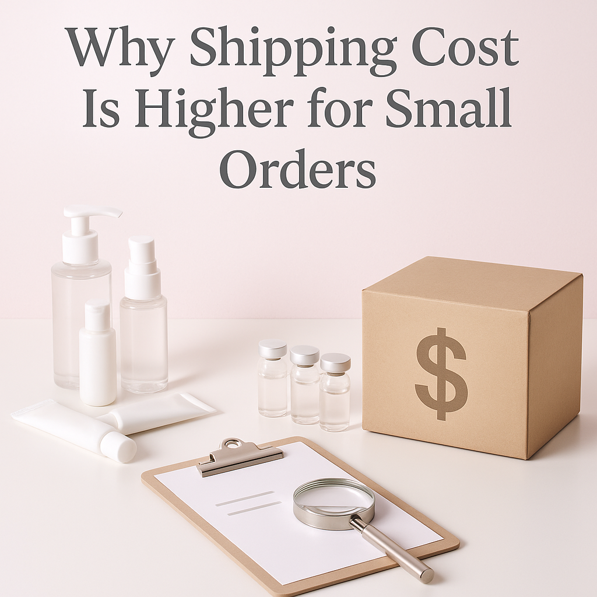

Understanding the reasons behind higher shipping costs for small orders can help professional buyers make informed decisions and optimize procurement.
As a professional buyer, you may have noticed that shipping costs are disproportionately higher for small orders compared to larger ones. This phenomenon can significantly impact your overall procurement strategy, especially when sourcing medical supplies or equipment. Understanding the underlying reasons for these elevated costs is essential for optimizing your budget and ensuring that your operations run smoothly.
In this article, we will explore the factors contributing to higher shipping costs for small orders. By grasping these concepts, you can make more informed decisions and potentially negotiate better terms with your suppliers. This knowledge is particularly valuable for clinics, spas, resellers, and distributors who frequently deal with varying order sizes.
Key Takeaways
- Shipping costs are often calculated based on weight and dimensions, making small orders less economical.
- Consolidating orders can lead to significant savings on shipping fees.
- Understanding Minimum Order Quantities (MOQs) can help you avoid higher costs.
- Effective reorder planning can mitigate the impact of shipping costs on your overall budget.
- Communication with suppliers about shipping options can lead to better pricing and terms.
What this guide covers
- Understanding shipping costs
- Buyer scenarios and order planning
- Comparison criteria for suppliers
- Checklist before requesting quotes
- Logistics questions and documentation
- MOQ and reorder planning
- Frequently asked questions
What buyers should understand first

Shipping costs are influenced by various factors, including the size and weight of the order, the shipping method, and the distance to the destination. For clinics, spas, resellers, and distributors, these costs can add up quickly, especially when ordering in smaller quantities. Understanding how shipping works is crucial for effective procurement.
When you place a small order, the fixed costs associated with shipping, such as packaging and handling, become a larger percentage of the total cost. This means that even if the product itself is inexpensive, the shipping fees can make it less viable. Therefore, it's essential to consider these aspects when planning your orders.
Which buyers is this most relevant for?
This topic is particularly relevant for professional buyers who frequently deal with small orders. For instance, clinics that require specific medical supplies on an as-needed basis may find themselves facing higher shipping costs. Similarly, spas that order specialty products in limited quantities may also encounter these challenges.
Resellers and distributors must evaluate their order planning needs carefully. If they often place small orders, they may need to rethink their sourcing strategies to minimize shipping costs. Understanding the implications of order size on shipping can help these buyers make more strategic decisions.
How to compare options before ordering
When evaluating suppliers, consider the following criteria to ensure you are making the best choice for your business:
- Product Type: Ensure the products meet your quality standards and specifications.
- Brand: Consider the reputation of the brand and its reliability.
- Packaging: Assess whether the packaging is suitable for your needs and minimizes shipping costs.
- Batch/Expiry Visibility: Ensure you have clear information on batch numbers and expiry dates for compliance.
- Supplier Communication: Evaluate how responsive and helpful the supplier is regarding shipping options.
- Destination Requirements: Understand any specific requirements or regulations for shipping to your location.
Buyer checklist before requesting a quote
- Determine your exact product requirements.
- Confirm the quantities needed, considering MOQs.
- Assess your budget for shipping costs.
- Gather information on potential suppliers and their shipping policies.
- Prepare questions regarding shipping options and timelines.
- Document any specific packaging needs or preferences.
Shipping, packing and documentation questions
When it comes to logistics, buyers often have several questions. Here are some common inquiries:
- What are the shipping options available for my order size?
- How will my products be packaged to ensure safe delivery?
- What documentation is required for shipping, especially for regulated products?
- Are there additional fees associated with specific shipping methods?
- How can I track my shipment once it has been dispatched?
MOQ, quotation and reorder planning
Understanding Minimum Order Quantities (MOQs) is crucial for professional buyers. Many suppliers set MOQs to ensure that their shipping costs are covered. When planning your orders, consider how these quantities align with your needs. If you frequently find yourself ordering small quantities, it may be worth discussing with your supplier to see if they can accommodate your requirements without incurring high shipping costs.
When preparing for a quote, be sure to include details such as the quantities you need, any product variants, and your destination. This information will help suppliers provide accurate pricing and shipping options. SOLA can assist in confirming current availability and providing wholesale quotations tailored to your needs.
FAQ
Why are shipping costs higher for small orders?
Shipping costs are often higher for small orders due to fixed costs associated with packaging, handling, and transportation that do not scale down with order size.
How can I reduce shipping costs?
Consolidating orders, negotiating with suppliers, and understanding MOQs can help reduce shipping costs significantly.
What should I consider when choosing a shipping method?
Consider factors such as delivery speed, cost, reliability, and any specific requirements for your products.
How do I know if I’m getting a good quote?
Compare quotes from multiple suppliers, taking into account shipping costs, product quality, and overall service.
Can SOLA help with shipping logistics?
Yes, SOLA can assist with confirming availability and providing wholesale quotations, including shipping options.
Contact SOLA for wholesale quotation via WhatsApp.
Planning a wholesale request?
Send product names, quantities and destination for a tailored discussion.
Contact SOLA on WhatsApp →General educational content for professional buyers. Not medical, legal, regulatory or import advice.